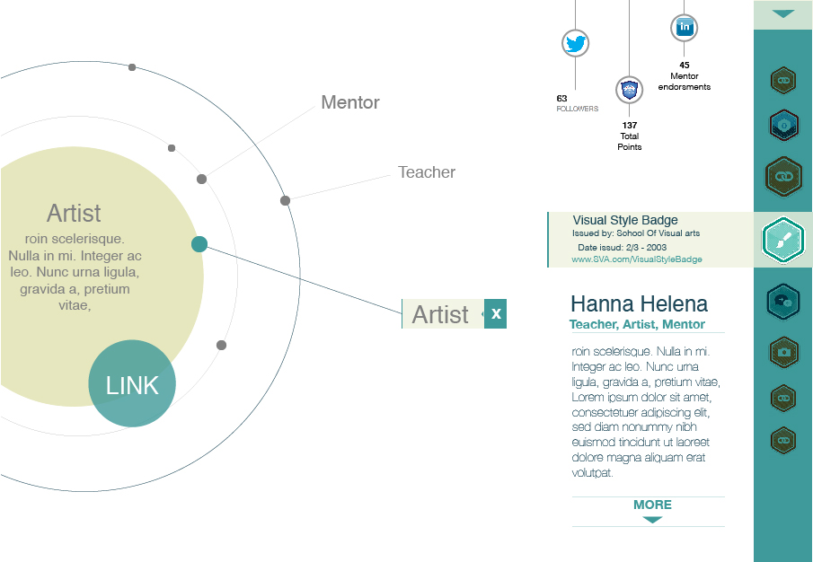
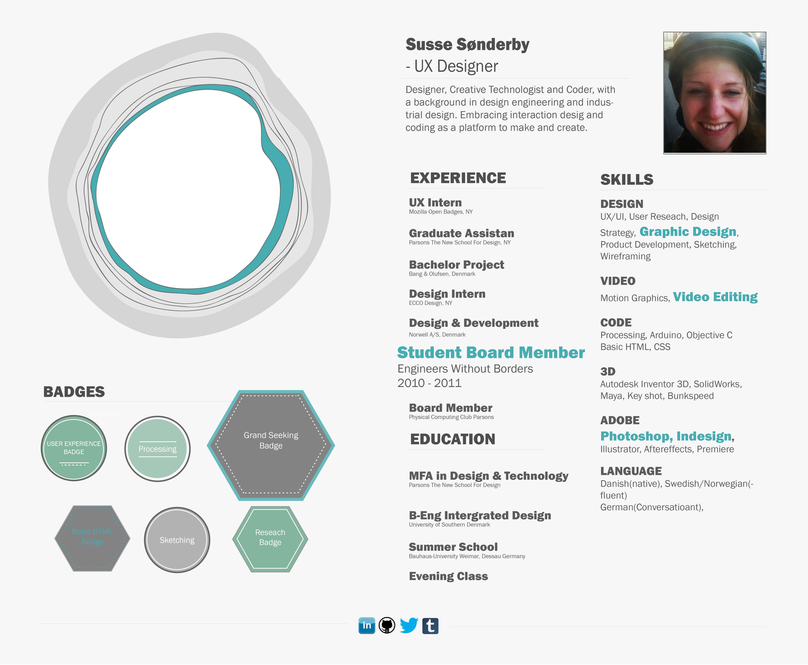

During my internship at Mozilla Open Badges, I had the opportunity to work with the Open Badges team on the future of digital skill sharing using Open Badges. Resume 2.0 is a project aiming to explore the future of Resumes and how Open Badges can help communicate potential and skills to future employers.
Throughout the 6 months I have been part of Mozillas Open Badges team, I have been fortuned to talk to a various number of people within Hive and the learning organisations around the US. Many of the ideas and work with the future of communicating skills, is based on conversations with students, teachers and administrators. A special thanks to:
Being part of the team at Open Badges , is indeed a unique experience in itself, working across states and continents is something Mozilla and the Open Badges team manages to do really well. I have been thrilled to help develop the future of digital skill sharing and support a system for accrediting learning at all level and ages, something I will continue to use and support.
>>
A collection of the prototypes I have created based on conversations I've had with various learning organisations and people involved.
Video Resume
The idea for the video resume, was sparked by concept of a reels and taking advantage of the story telling within a video and having events show up as the video progresses.
World Map Resume
Within this world map the idea is to add events to places your career and education has taken place.
Connected Resume
A big part of Open Badges is providing a tool to validate and enforce a skills, the connected Resume was a way to show layers of earned skills and how these are earned.

Tree Stumb Resume
One of the metaphones I was especially intruigued by was the tree stumb analogy, and having your stumb grow as you add more centent to the rings.

Timeline Resume
Inspired by a number of timelines, I was especially intrugued by having a linear timeline show progress over time.
Map Resume
I'm a big fan of maps, especially the way subway maps are illustrated, having mulitple titles overlap and intersect, is something I find interesting, especially when seeing these evolve over time.
Learning Portfolio
This prototype was sparked from a conversation I had with Dreamyard a learning organisation in New York, where students work reflected skills just as much as a title did.
>>
I have been experimenting with a few prototypes for a resume that focus on changing the content based on the various time you create a resume and share a resume. I’m still hesitant to use the word resume, and therefore I’m using Share A Path instead. This was an idea, based on my many other prototypes, but also from the workshop at MozFest.
I was especially fascinated by the way of designing a platform to be able to curate your own digital trades and being able to curate your own story in order to communicate potential.
I was fascinated by the aspect of your resume being your way of telling a story about what you have done in the past, and what you are aiming for in the future.
It was after speaking to Victor Saad for the Experienced Institute, I was motivated to keep going with this idea of curating your path and adding media to this. Try it out using following
Share A Path
Login: susse
Password: susse
What I’d like to continue working with is the aspect of sharing a link that takes advantage of the arc. By clicking on the events on the arc, different online things show up to validate the title.
I’m convinced that portfolio and resume in the future will melt together and learning portfolio will no longer be for the creative field.
I’m also convinced that Big data and the social media trades we leave online, will become an important factor in seeking new opportunities and understanding our online identities.
<<